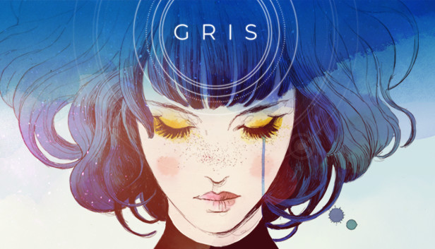
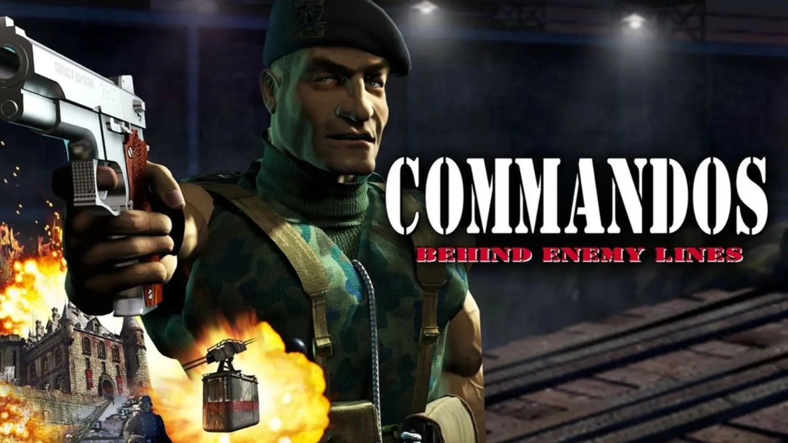
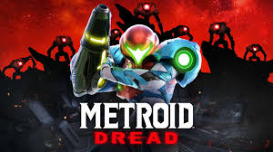
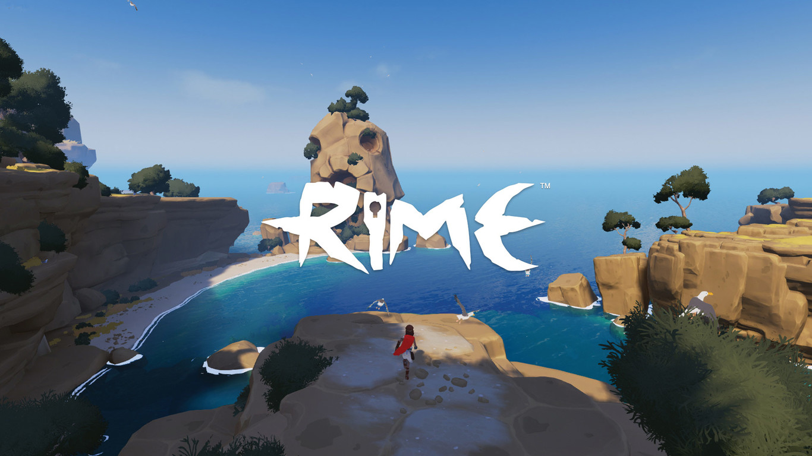

Blasphemous: Un metroidvania oscuro inspirado en la cultura religiosa española. Destaca por su dificultad, ambientación única y estilo artístico muy detallado.
Blasphemous: Un metroidvania oscuro inspirado en la cultura religiosa española. Destaca por su dificultad, ambientación única y estilo artístico muy detallado.

GRIS: Un juego artístico centrado en la narrativa emocional. Utiliza colores y música para contar una historia sin apenas texto.

Commandos: Juego de estrategia ambientado en la Segunda Guerra Mundial. Fue un éxito internacional y uno de los más importantes en España.

Metroid Dread: Desarrollado por MercurySteam, es un juego de acción con exploración fluida y una gran tensión constante.

Rime: Una aventura de puzles en una isla misteriosa con un estilo artístico precioso y una historia emotiva.